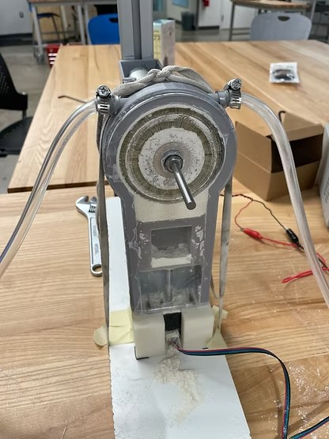
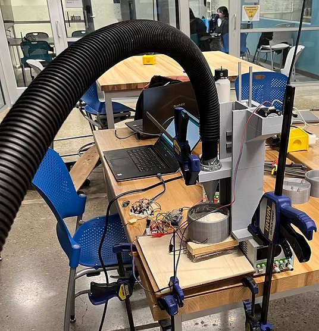
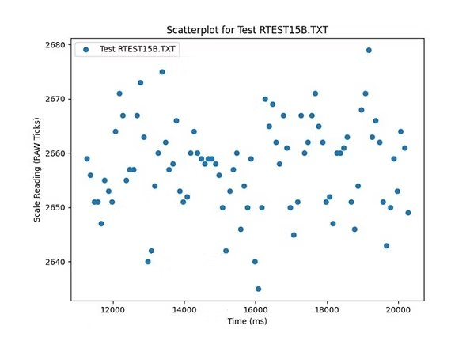
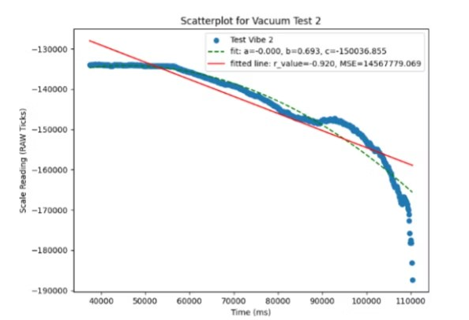
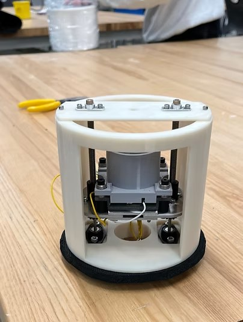
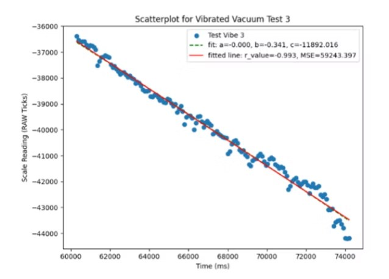
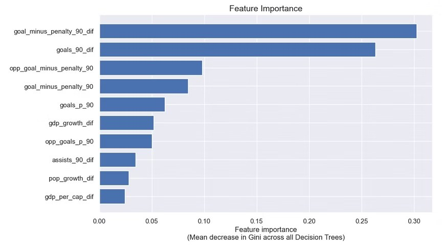
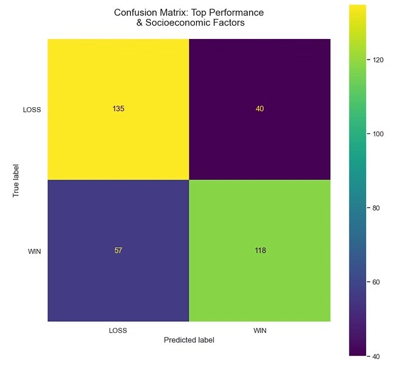
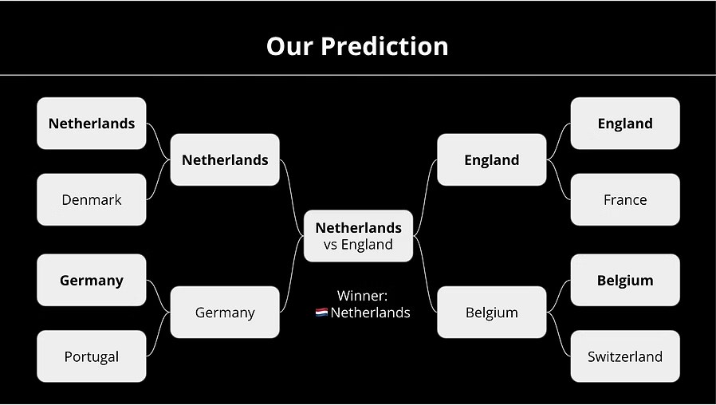

Northeastern University · 2019 – 2023
Design, Data Analysis & Machine Learning
Research, Mechanical Design & Testing
Problem
Our client, Professor Ozan Özdemir of Northeastern's Cold Spray Lab, needed a metal powder aerosolizer that could consistently aerosolize fine particles (0.5–10 microns) with controlled volume flow rates and particle concentrations.
Action
Researched how fine metal powders are aerosolized in industry and academia, then narrowed our approach to two options: a rotary brush method and a novel vacuum method our group developed.
Built a prototype for each and placed both on a load cell to measure feed rate consistency.

Image of our Rotary Brush Prototype.

Image of our Vacuum Method Prototype.
The rotary brush data was indecipherable. The vacuum method showed a clear exponential trend — making it the clear choice to pursue.

Load Cell Data for the Rotary Brush Approach.

Load Cell Data for the Vacuum Method.
Developed a final prototype to fit inside the existing pressure vessel, applying vibration to linearize the exponential feed rate trend.
Outcome
The final prototype achieved consistent, controlled aerosolization — fulfilling the client's requirements. Load cell data confirmed vibration successfully linearized the feed rate.

Image of our final prototype.

Load Cell Data for the Vacuum Method using vibration.
Python & Machine Learning
Problem
For an Intro to Machine Learning course, my group chose to predict the 2022 FIFA World Cup using historical match data and socioeconomic indicators.
Action
Scraped and cleaned historical World Cup match data and socioeconomic data from Macrotrends, merging into a single dataframe.
Tried decision tree and K-nearest neighbors classifiers. Dropped draws to improve accuracy, then used a random forest to identify the 10 most important features out of 42.

Our Feature Importance based on the Random Forest calculations.
Cross-validated KNN and found 16 to be the optimal number of neighbors, achieving an accuracy score of ~0.75.
Applied the model to all 2022 group stage matchups bracket-style to predict a winner.

Confusion Matrix depicting how often the KNN classifier accurately predicts wins and losses.
Outcome
The model produced a full predicted bracket with a KNN accuracy score of ~0.75. We didn't get the winner right — but Netherlands came close!

Predicted Bracket of the 2022 World Cup. We got it wrong but Netherlands got close!